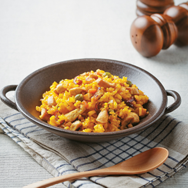

닭고기 볶음밥
적당히 볶아서 먹자

오늘의 추천 메뉴 표지
요리 정보
- 탄수화물:
- 30.8 g
- 단백질:
- 4.73 g
- 지방:
- 3.92 g
- 열량:
- 622.5 kcal
- 나트륨:
- 121 mg
재료
- 쌀(80g)
- 완두콩(10g)
- 닭고기(100g)
- 대추(10g)
- 수삼(20g)
- 양파(20g)
- 당근(10g)
양념
조리 과정
- 쌀은 30분 정도 불린 뒤 동량의 물에 강황가루를 풀어 완두콩과 함께 넣어 밥을 짓는다.
- 닭고기를 깨끗이 씻은 후 끓는 물에 살짝 데쳐 기름기를 제거한 뒤 작게 썰어 대추, 수삼과 함께 맛술에 재워 잡냄새를 없앤다.
- 양파와 당근은 작게 깍둑 썬다.
- 팬에 기름을 두른 후 재워둔 닭고기와 당근, 양파를 볶는다.
- 강황밥을 넣고 같이 볶아 마무리한다.
요리 팁:
강황가루 특유의 향을 통해 소금과 기름의 양을 줄여 나트륨 함량을 낮췄다.